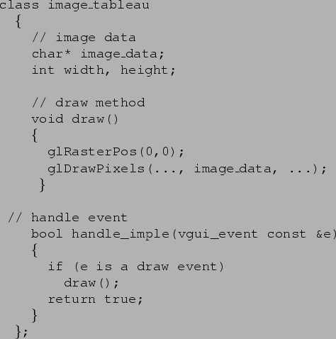
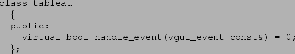

As an example of a concrete task that will illustrate the use and power of
the system, consider the simple case of displaying a 2D image. A tableau
that displays an image looks something like:

In fact, the draw method will probably be significantly more complex, in
order to get maximum efficiency, overcome certain GL weirdnesses, and so
on, but the basic code is there.
This interface is abstracted in the obvious manner:

The key observation is that the tableau assumes that when its draw method
is called, the OpenGL system is set up so that the tableau's window is
current, the camera is in a sensible position and so on. It is the job of
the parent window, in which the tableau is placed, to ensure that this
applies, but as we shall see, with this responsibility also comes power...